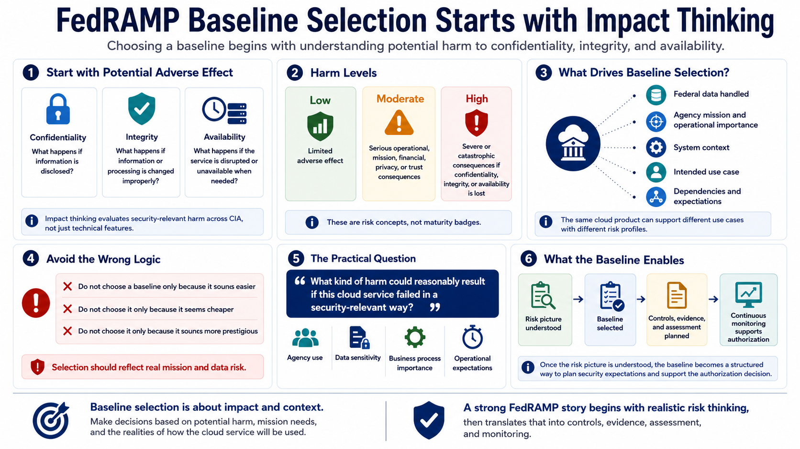

Impact Levels and System Categorization
Connecting to LMS... Progress: in progress

Narration
FedRAMP baseline selection starts with impact thinking. Federal systems are categorized by considering the potential adverse effect of a loss of confidentiality, integrity, or availability. Confidentiality asks what happens if information is disclosed. Integrity asks what happens if information or processing is changed improperly. Availability asks what happens if the service is disrupted or cannot be used when needed.
Low, Moderate, and High are practical labels for different levels of potential harm. Low-impact systems generally involve limited adverse effects if something goes wrong. Moderate-impact systems involve more serious operational, mission, financial, privacy, or trust consequences. High-impact systems are associated with severe or catastrophic consequences if confidentiality, integrity, or availability is lost. These are risk concepts, not badges of maturity.
Baseline selection should reflect the federal data, agency mission, system context, and intended use case. A SaaS product used for simple collaboration may have a different risk profile from a platform that supports critical agency operations. The same cloud product may also be used differently by different customers. That is why teams should avoid choosing a baseline only because it sounds easier, cheaper, or more prestigious.
The practical question is, 'What kind of harm could reasonably result if this cloud service failed in a security-relevant way?' That answer should be informed by agency use, data sensitivity, dependencies, business process importance, and operational expectations. Once that risk picture is understood, the baseline becomes a structured way to plan the controls, evidence, assessment activity, and monitoring needed to support the authorization decision.